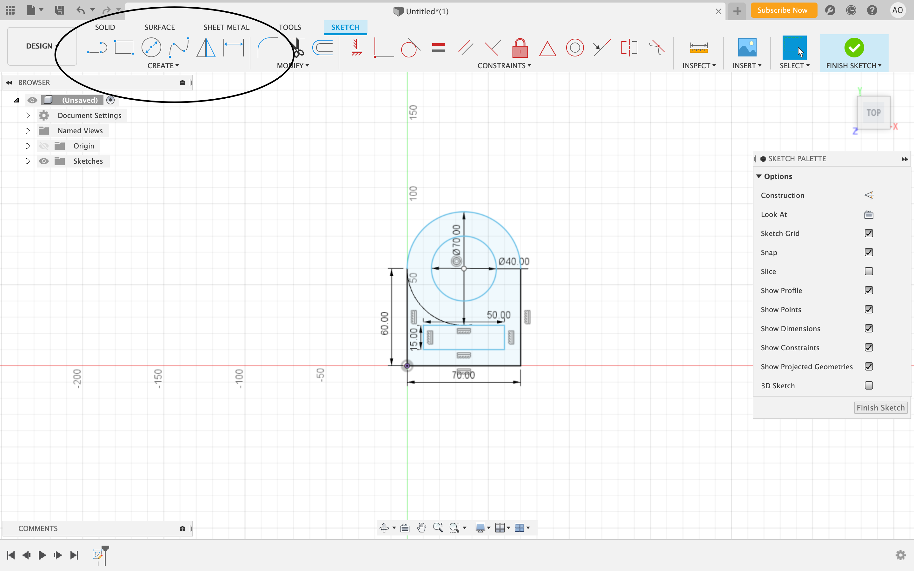
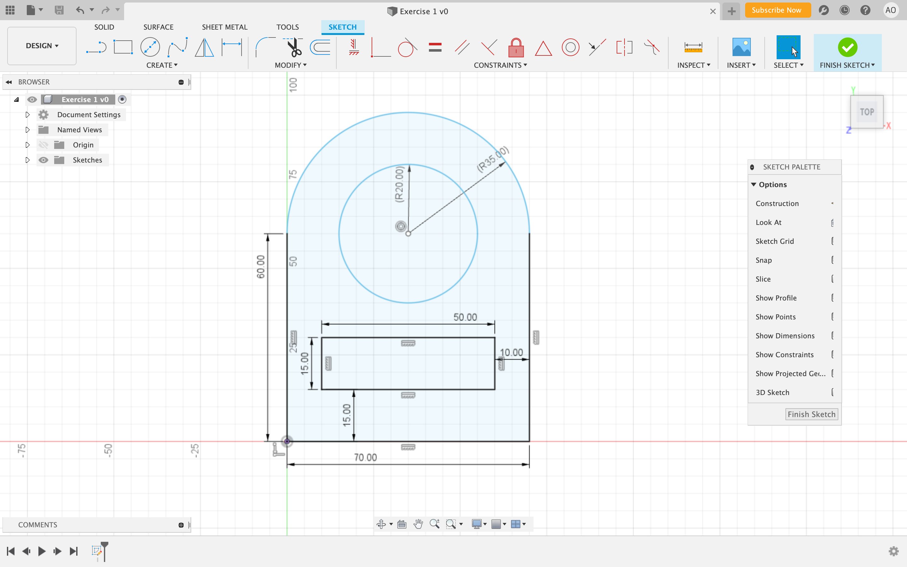
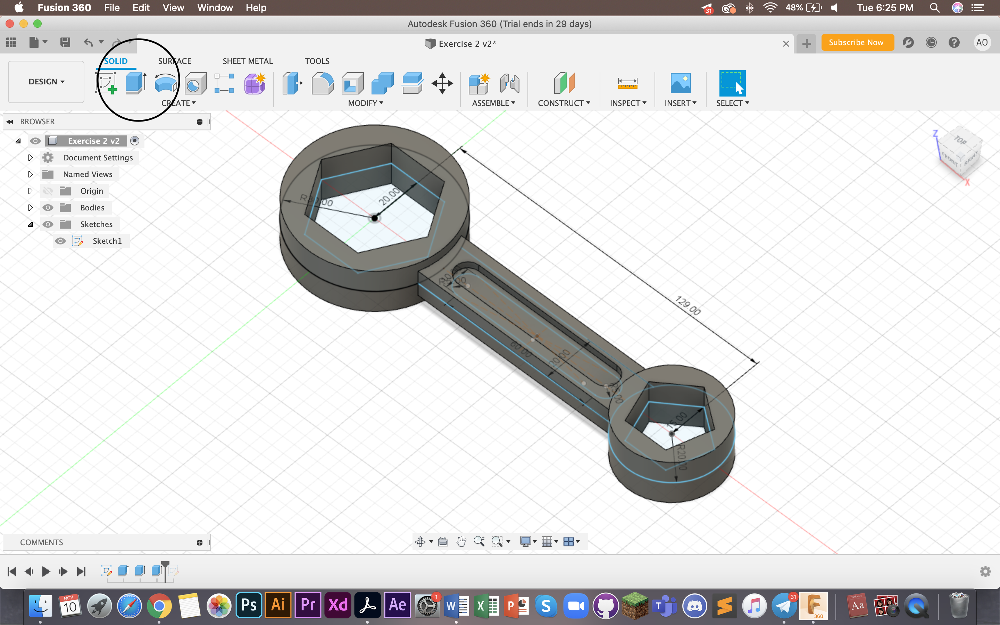
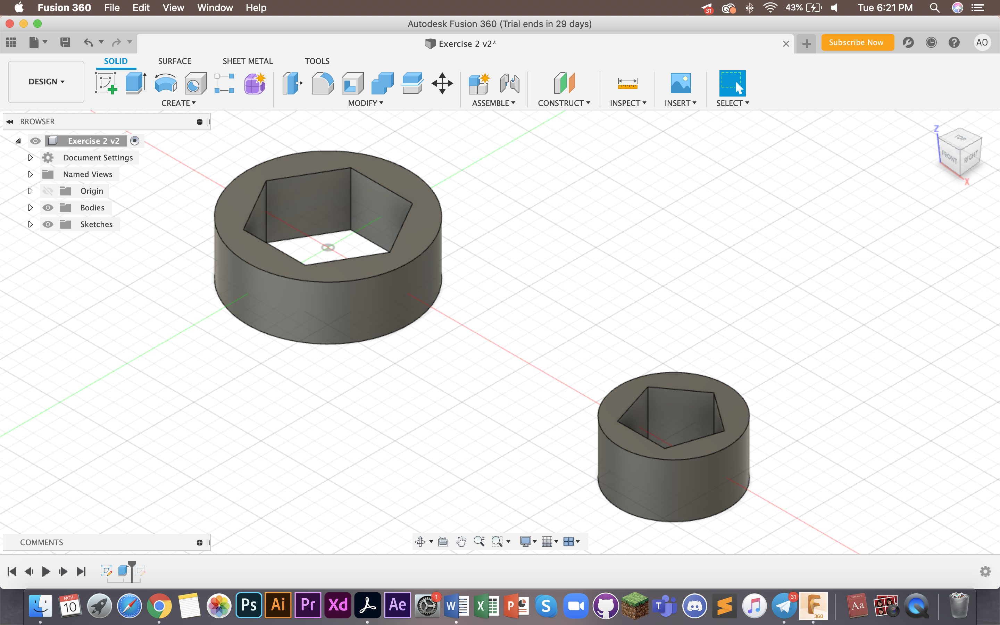
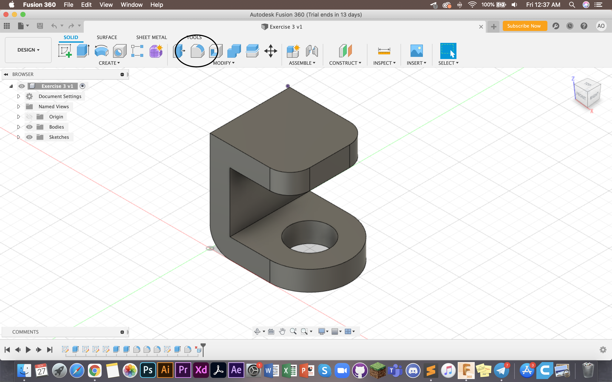
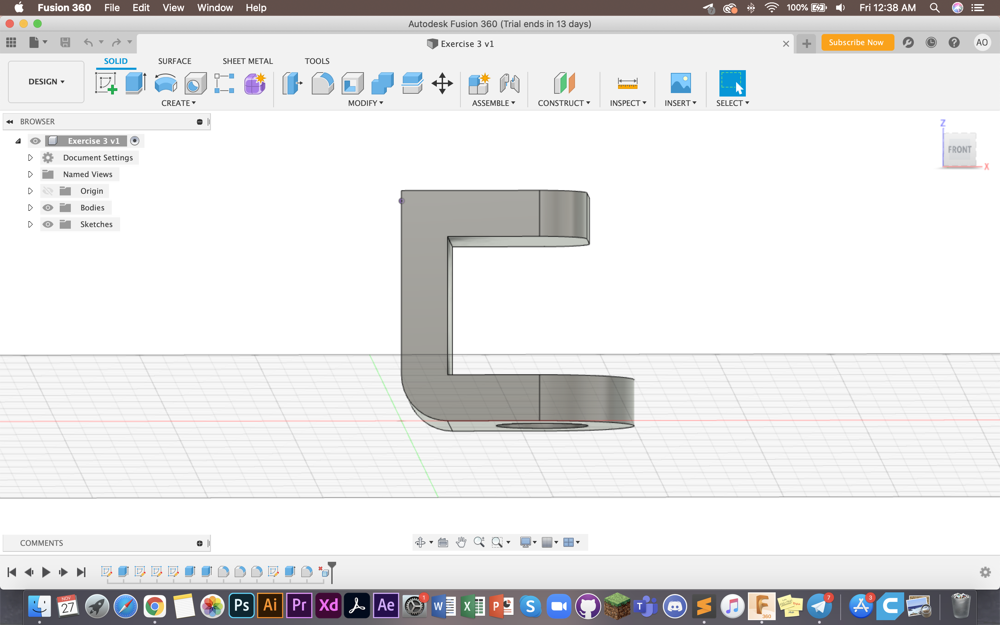

Computer Aided Design
CAD, or computer-aided design and drafting (CADD), is technology for design and technical documentation, which replaces manual drafting with an automated process. It is useful for engineers, designers and professions alike.
Fusion 360
Fusion 360 is a cloud based CAD tool. It allows us to make 2D and 3D drawings to allow exploration of product ideas. It combines organic shapes modelling, mechanical design and manufacturing together. It is downloadable on desktop for most computers (I use apple and it is compatible with IOS). The software is free for students after confirming student ID with the system. One of the main materials that is useful is Kevin Kennedy's Fusion 360 Navigation video.
Here are my first sketches based on the exercises given to us class. You can find these exercises on this EP1000 site by Mr Dorville
1. Create sketches using the tool as circled

As you can see I have done up a sketch of my first assignment here. I used the circle tools, the line tools and measurement tool. I also made sure to draw this top down as you can see from the icon on the right. To do the same as me, just click on the icon.
You can also open up the sketch palette as seen on the right. It makes functions easier to toggle. This is also my completed sketch. You can see how I made use of the sketch tools and dimensions to draw precise shapes. When you type in the measurement you are looking for, it automatically makes the sketch dimension that long.
2. You can extrude sketches to make them 3D
This is a different sketch I did. As you can see here it has been extruded and is now a 3D object. I used the "extrude" tool (as seen in the circle in the picture above), selected my sketch and dragged it out to reach this shape of this dimension. You can do this by manually dragging or keying in the measurements. Both work equally well.
Be careful to select the entire sketch, if you don't this might happen:
This is what happened to me when I only selected the two ends. Mouse over and make sure the entire sketch turns dark blue. That's how you know you have selected the whole sketch.
For my 3rd assignment, I used the "fillet" feature to make the edges rounded. As you can see, the front top, bottom and back of this 3D piece are rounded. The "fillet" function allows you to do that.
Something to note is that the model had to be built from bottom up. I first drew from the top view, left and bottom. This allowed me to extrude the artwork.

3. Designing something to be 3D printed
Generally, Fusion 360 allows us to design 3D objects digitally. To learn more about 3D printing, you can check out the 3D printing page in this website
Thank you! That's all :) Last updated: 25th November 2020